JavaRWLock
读写锁
当读操作远远高于写操作时，这时候使用读写锁, 让读-读可以并发，提高性能。 类似于数据库中的select ...from ... lock in share mode
读锁是为了在读的同时, 别的线程不能来写, 就是读和写互斥, 写和写互斥, 但读和读不互斥
@Slf4j(topic = "test0")
public class TestReadWriteLock {
public static void main(String[] args) throws InterruptedException {
DataContainer dataContainer = new DataContainer();
new Thread(() -> {
dataContainer.read();
}, "t1").start();
Thread.sleep(100);
new Thread(() -> {
dataContainer.write();
}, "t2").start();
}
}
@Slf4j(topic = "test1")
class DataContainer {
private Object data;
private ReentrantReadWriteLock rw = new ReentrantReadWriteLock();
private ReentrantReadWriteLock.ReadLock r = rw.readLock();
private ReentrantReadWriteLock.WriteLock w = rw.writeLock();
public Object read() {
log.debug("获取读锁...");
r.lock();
try {
log.debug("读取");
sleep(1);
return data;
} finally {
log.debug("释放读锁...");
r.unlock();
}
}
public void write() {
log.debug("获取写锁...");
w.lock();
try {
log.debug("写入");
sleep(1);
} finally {
log.debug("释放写锁...");
w.unlock();
}
}
}注意:
- 读锁不支持条件变量
- 重入时升级不支持：即持有读锁的情况下去获取写锁，会导致获取写锁永久等待
- 重入时降级支持：即持有写锁的情况下去获取读锁
读写锁原理

乐观读锁
在使用读锁、写锁时都必须配合【戳】使用, 读锁时检验戳, 如果相同, 说明没被改变, 就直接读, 如果改变, 再加锁.
注意:
- StampedLock 不支持条件变量
- StampedLock 不支持可重入
@Slf4j(topic = "test0")
public class TestStampedLock {
public static void main(String[] args) throws InterruptedException {
Stamped stamped = new Stamped(1);
new Thread(() -> {
try {
stamped.read();
} catch (InterruptedException e) {
e.printStackTrace();
}
}, "t1").start();
Thread.sleep(500);
new Thread(() -> {
stamped.write();
}, "t2").start();
}
}
@Slf4j(topic = "test1")
class Stamped {
private int data;
private final StampedLock lock = new StampedLock();
public Stamped(int data) {
this.data = data;
}
public int read() throws InterruptedException {
long stamp = lock.tryOptimisticRead();
log.debug("optimistic read locking...{}", stamp);
Thread.sleep(1);
if (lock.validate(stamp)) {
log.debug("read finish...{}, data:{}", stamp, data);
return data;
}
//锁升级 - 读锁
log.debug("updating to read lock... {}", stamp);
try {
stamp = lock.readLock();
log.debug("read lock {}", stamp);
Thread.sleep(1);
log.debug("read finish...{}, data:{}", stamp, data);
return data;
} finally {
log.debug("read unlock {}", stamp);
lock.unlockRead(stamp);
}
}
public void write() {
long stamp = lock.writeLock();
log.debug("write lock {}", stamp);
try {
sleep(2);
} finally {
log.debug("write unlock {}", stamp);
lock.unlockWrite(stamp);
}
}
}